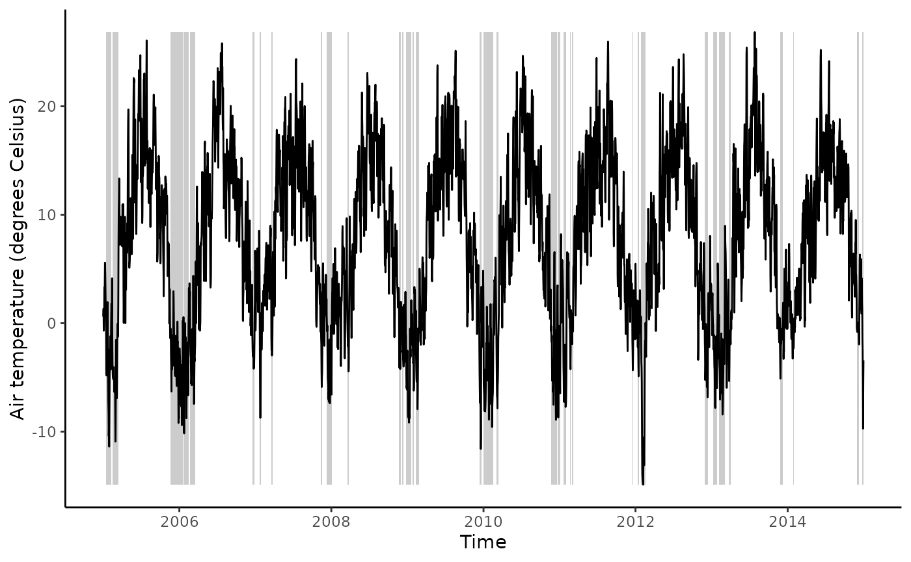
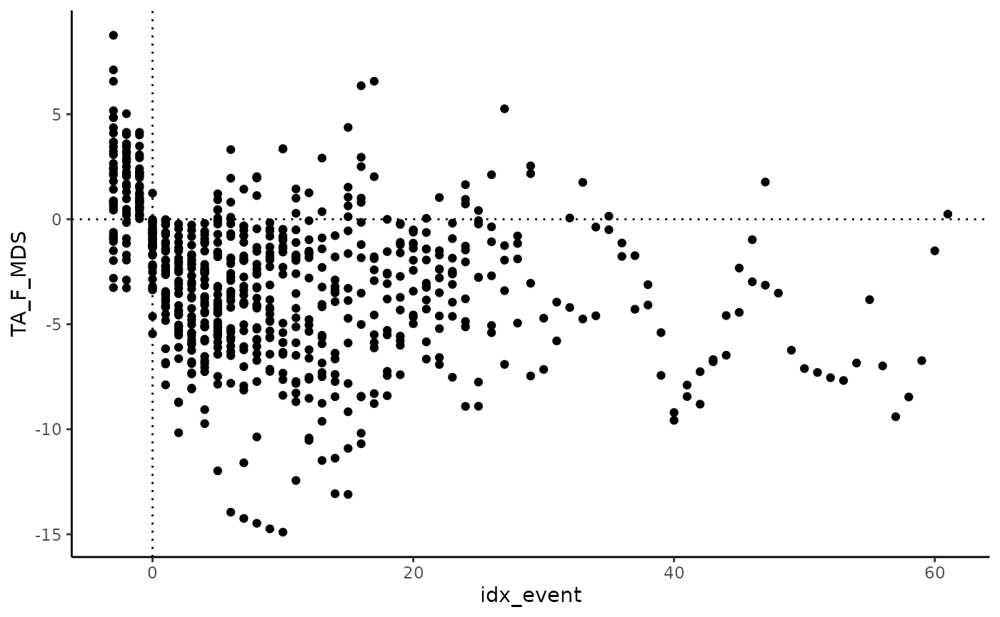

An event is defined here as consecutive time steps where a certain
condition is fulfilled - yielding a vector of a logical (boolean)
variable. This vignette demonstrates how such events are derived from
the boolean vector using the rgeco function
get_consecutive(), and a time series data frame re-arranged
and labelled with sequential time steps into a given event
(eventstep), using the rgeco function
align_events().
Prepare data
Read data from the file contained in this repository. This is a data frame containing time series of multiple variables arranged in columns and each time step (day) is a row.
Below, let’s consider the following variables:
-
TIMESTAMP: the date of observation -
TA_F_MDS: air temperature in degrees Celsius
Event detection
Let’s consider frost events as periods of consecutive days where air
temperature is below zero and create a new variable in the data frame
that contains this information as a boolean vector
(isfrost).
With this vector, we can apply the function
get_consecutive().
events <- get_consecutive(
df$isfrost,
merge_threshold = 3,
leng_threshold = 5,
do_merge = TRUE
)This yields information about the events start and length, expressed
in index position of the boolean vector (here
df$isfrost).
head(events)## idx_start len
## 1 15 24
## 2 44 29
## 3 322 61
## 4 387 24
## 5 418 25
## 6 717 11We can use this to get the corresponding dates.
# get start and end date of longest sequences
events <- events |>
mutate(
start = lubridate::as_date(df$TIMESTAMP[events$idx_start]),
end = lubridate::as_date(df$TIMESTAMP[events$idx_start + events$len - 1])
)With this information, we can visualise the detected frost events.
ggplot() +
# grey rectangles for each event
geom_rect(
data = events,
aes(
xmin = start,
xmax = end,
ymin = min(df$TA_F_MDS, na.rm = TRUE),
ymax = max(df$TA_F_MDS, na.rm = TRUE)
),
fill = "grey80"
) +
geom_line(
data = df,
aes(
TIMESTAMP,
TA_F_MDS
)) +
labs(x = "Time",
y = "Air temperature (degrees Celsius)") +
theme_classic()
Align events
Now that the events are detected, the data within each event can be re-arranged, treating each event as a comparable sequence of time steps (here days).
aligned <- align_events(
df,
events = events,
leng_threshold = 5,
before = 3,
after = 100
)We can now plot data during each frost event versus the
idx_event (here day into frost event, counting from 0, in
the output data frame).
aligned |>
ggplot(aes(idx_event, TA_F_MDS)) +
geom_point() +
geom_hline(yintercept = 0, linetype = "dotted") +
geom_vline(xintercept = 0, linetype = "dotted") +
theme_classic()